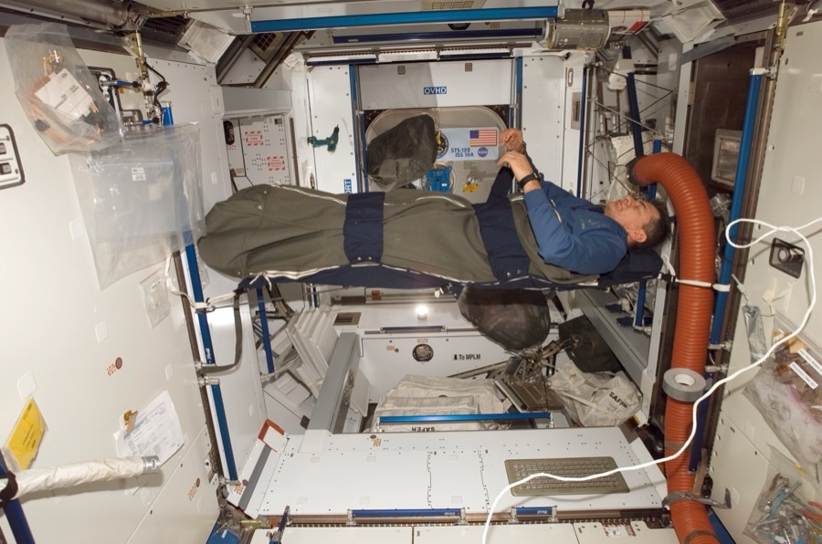

Sleep, nutrition & circadian rhythms
ISS sees 16 sunrises a day. The crew is on Greenwich Mean Time anyway, eats food engineered to not float, and routinely sleeps worse than they would on Earth. Long-duration missions live or die by how well this stack works.
Circadian rhythm is the hardest invariant in low-Earth orbit. The ISS orbits Earth every 92 minutes, which means the crew sees a sunrise (or a sunset) every 46 minutes — about 16 of each per 24-hour day. The human circadian system is built around a single sunrise / sunset cycle, so a steady stream of 'is it morning?' light cues overrides every other signal. The countermeasure is a rigid schedule (Greenwich Mean Time, fixed wake at 06:00 GMT, fixed sleep at 21:30 GMT), heavy blackout curtains in each sleep station, and active circadian-aligned lighting throughout the cabin — daytime light is bluish-white at ~5500K, evening light shifts to amber ~2700K, matching what would be expected on Earth. Even with all that, ISS crew sleep about 6 hours/night vs ~7-8 on Earth, and use sleep aids more often than ground controls. The data from ISS expedition sleep studies (now ~30 years of records) is one of the better-characterised sleep-disruption datasets in any operational environment.
Sleep stations look like padded telephone booths. On the US segment they're 0.9 × 0.9 × 2 m, with a wall-anchored sleeping bag, personal ventilation (ISS atmosphere is mixed enough that CO₂ doesn't pool near a sleeping crew member in microgravity — but only just; the fan is non-negotiable), reading lights, and a laptop nook for personal time. Russian-segment sleep is in similar booth-modules attached to Zvezda + Nauka. Tiangong's Tianhe module has comparable booths along the inside wall of the workshop. The booth design is the result of 30 years of iteration — Skylab's original sleep restraints were just zero-g hammocks; Mir's were thin wall-bunks with no privacy; ISS Expedition 1 (2000) had quasi-camping configurations that the second crew immediately complained about. The sealed-booth design with proper light + ventilation + personal stowage has been the standard since 2007.
Food engineering is a stranger problem than it sounds. Microgravity changes swallowing (the bolus has to be actively pushed; crew members chew more times per bite than on Earth), changes taste (the fluid shift toward the head causes ~30% reduction in odour perception, which means taste is also reduced — astronauts describe everything as bland for the first 2 weeks), changes appetite (most crew lose 5-10% body weight in the first month of an expedition; the body is in a different metabolic state than at 1 g), and changes choking risk (no gravity to pull a misdirected swallow down the right pipe). The ISS Food System engineering response is foods that don't crumble (no bread; crews eat tortillas), foods that bind to themselves (a lot of sauces and gravies — they hold the meal together), strong flavours (hot sauce is iconically over-consumed on ISS), and absolutely no carbonated drinks (the bubbles don't separate from the liquid in microgravity, which makes drinking carbonated water in zero-g a uniquely unpleasant experience).
Caloric needs are higher in space than on Earth — typically 2800-3000 kcal/day for a male astronaut on ISS, vs 2400-2600 at 1 g. Part of that is exercise (2 hours/day of resistance + cardio, more on that in the bone-density-loss article), part is the elevated metabolic demand of constant micro-corrections against drift. NASA's Space Food Systems Laboratory at Johnson runs through about 200 menu items per crew rotation; Roscosmos has a parallel menu programme; CNSA has built up its own Chinese-cuisine-oriented menu (yuxiang shredded pork, kung pao chicken, all engineered for microgravity). International missions cross-pollinate: ISS crew members of any nationality can request food from any of the partner agencies. The Apollo programme used spoon-bowl pouches + freeze-dried rehydration; Shuttle moved to thermostabilised pouches; ISS uses a mix; Mars-class transit menus are still being designed — the longest food-supply storage problem in the project.
Water is the other thermal-rebalancing variable. ISS crew drink 2.0-2.5 L/day, all of it from the Water Recovery System (see the ECLSS article — most of it is recycled urine + condensate + EVA suit water). Hydration tracks closely with bone-density and renal-stone risk, so the data is monitored daily. Russian-segment water is from a parallel Roscosmos system that doesn't process urine (the source is humidity condensate + resupply); the two halves can share but typically don't. Tiangong runs its own closed-loop system on Tianhe. The Mars-class architecture being studied at JSC + EAC + IKI explicitly assumes >98% closed-loop water — anything less than that requires more launch mass than chemical-rocket Mars architectures can plausibly deliver.

SEE IN THE APP
- /iss Harmony (Node 2) — the dining + sleep-quarters cluster; Tranquility (Node 3) — exercise equipment + waste/water; Destiny — galley microwave + dining table
- /tiangong Tianhe core module — the Chinese architecture has sleep + dining inside the single living module
- /missions ISS expeditions, future Mars-class transits — 6+ month missions are where the sleep + nutrition stack matters most